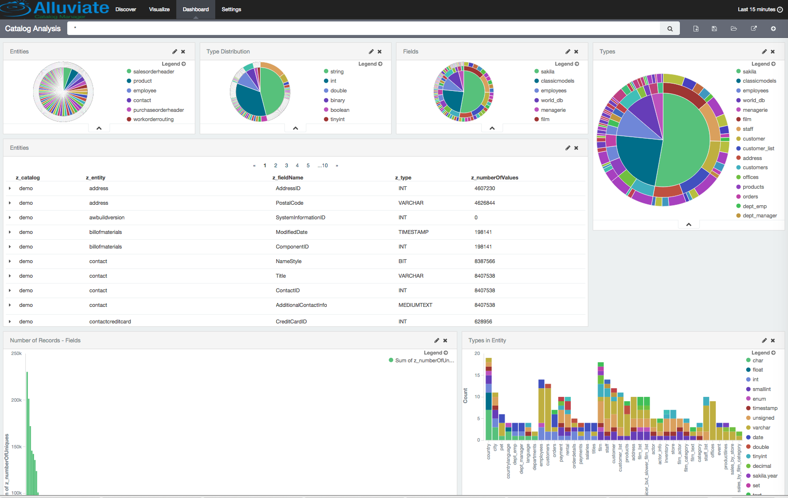
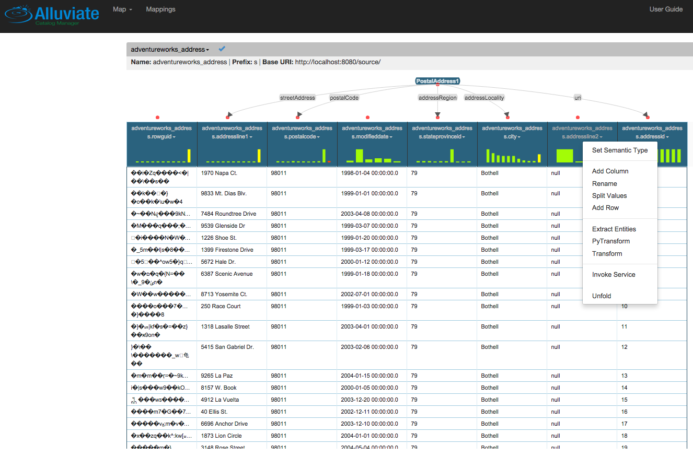

Connection Machine
Deep Learning Analytics Suite
- Data Inventory and Discovery
- Deep Learning Analytics Lifecycle management
- Scalable Spark and TensorFlow based Deep Learning
One carries data from scattered silos into an indexed catalogue. The other answers questions against it in plain language.
Deep Learning Analytics Suite
Deep Question and Answer


Start with a two-week roadmap that turns one business problem into a Deep Learning proof of concept.